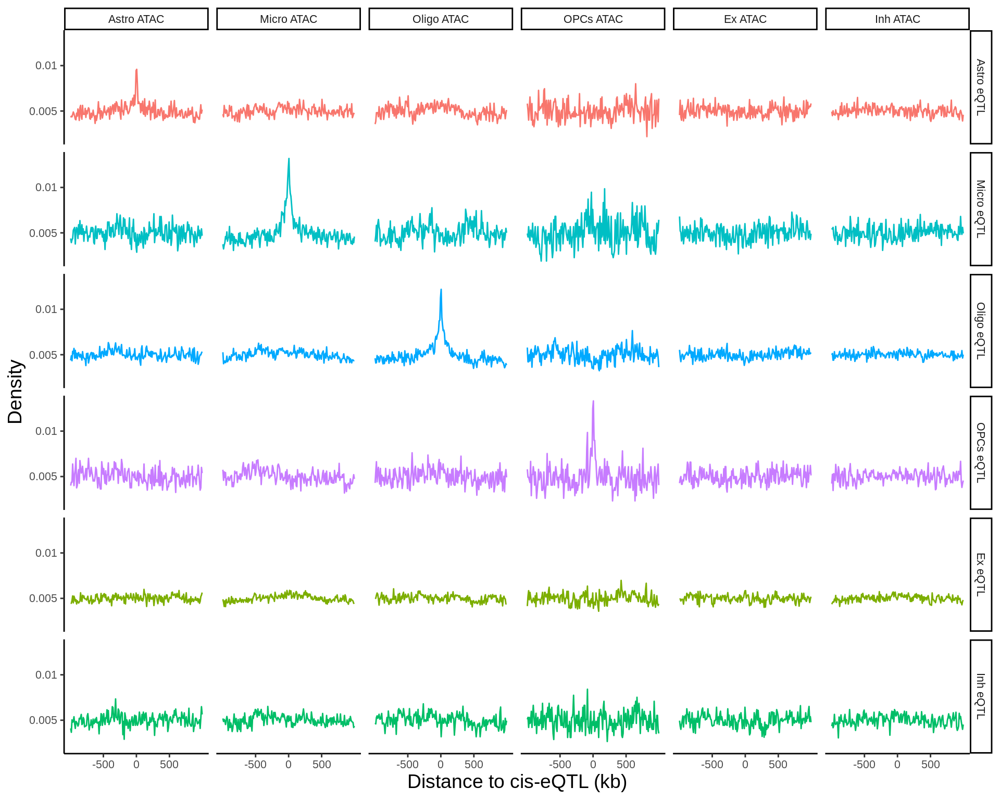
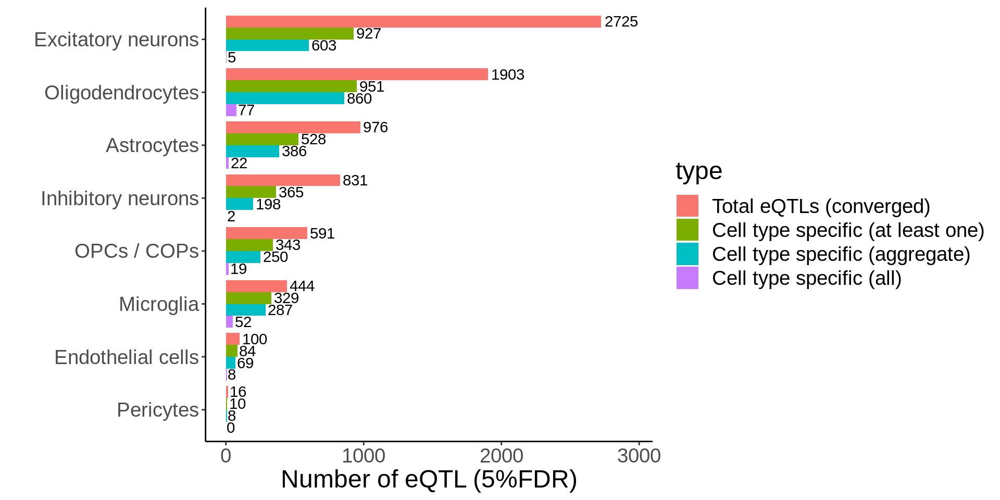
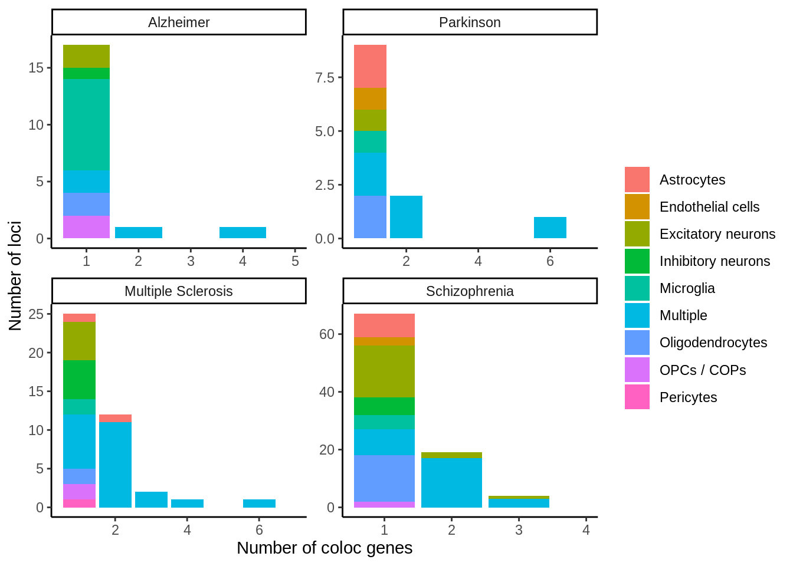
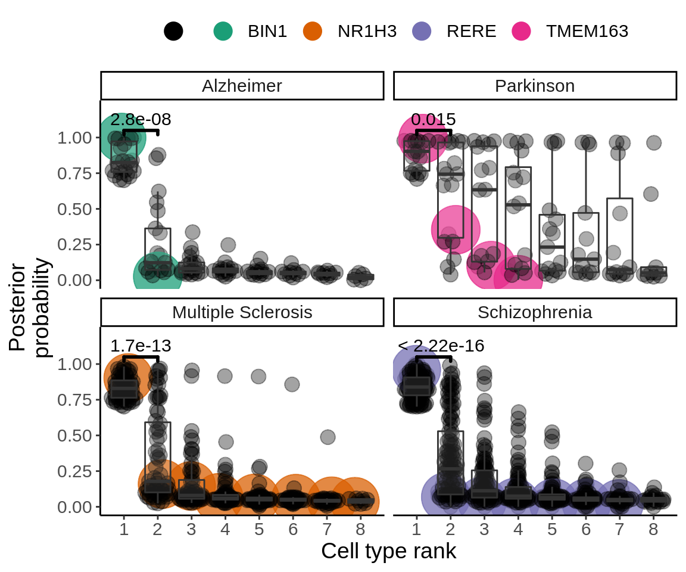

Main figures
dir.create('output/figures',showWarnings = FALSE)Figure 1
UMAP
umap <- read_tsv('data/umap/umap.ad.subsample.txt')pos <- umap %>% group_by(broad) %>%
summarise(UMAP_1=median(UMAP_1),
UMAP_2=median(UMAP_2))p <- ggplot(umap,aes(UMAP_1,UMAP_2,col=broad)) +
geom_point(size=0.1) +
theme_classic() +
theme(legend.position='none',
axis.text = element_blank(),
axis.ticks = element_blank(),
axis.title = element_blank(),
axis.line = element_blank())
p + geom_text(data=pos,aes(label=broad),col='black',size=5)p <- p + geom_text(data=pos,aes(label=broad),col='black',size=9)
ggsave(p,filename = 'output/figures/Figure1_umap.png',width=12,height=8,dpi = 300)Interaction
hdF5_file_path <- 'output/shiny/data.h5'eqtl_specific <- h5read(hdF5_file_path, "eqtl_results/eqtl_results_specific")plot_eqtl_specific <- function(cell_type_name,gene_name,snp_name,cells_to_display){
gene_short <- gsub('_.+','',gene_name)
genotype <- h5read(hdF5_file_path, paste0("genotype/",snp_name))
expression <- h5read(hdF5_file_path, paste0("expression/",gene_name)) %>%
dplyr::rename(individual=individual_id) %>%
mutate(cell_type=fct_relevel(cell_type,cell_type_name)) %>%
filter(cell_type%in%cells_to_display)
pval <- filter(eqtl_specific,gene==gene_name,cell_type==cell_type_name) %>% pull(nb_pvalue_all_adj)
d <- inner_join(genotype,expression,by='individual') %>%
mutate(genotype_label = case_when(
genotype == 0 ~ paste0(REF,REF),
genotype == 1 ~ paste0(REF,ALT),
genotype == 2 ~ paste0(ALT,ALT)
))
p <- ggplot(d, aes(genotype_label,log2_cpm,col=cell_type)) +
ggbeeswarm::geom_quasirandom(size=0.5) +
geom_boxplot(alpha=0.05,aes(group=genotype_label),outlier.shape = NA) +
theme_classic() +
theme(legend.position='none',text=element_blank(),strip.background = element_blank(),
strip.text.x = element_blank(),axis.text = element_blank(),axis.ticks = element_blank(), axis.line = element_blank()) +
xlab('') +
ylab('') +
facet_wrap(~cell_type,ncol=4) +
scale_color_discrete(limits=levels(d$cell_type) %>% as.character() %>% sort(),drop=FALSE)
p
}gene_name <- 'CHRM5_ENSG00000184984'
snp_name <- 'rs8038713'
cell_type_name <- 'Oligodendrocytes'
cells_to_display <- c('Oligodendrocytes','Excitatory neurons', 'Inhibitory neurons')
chrm5 <- plot_eqtl_specific(cell_type_name,gene_name,snp_name,cells_to_display) + theme(text=element_text(size=20),plot.title = element_text(size=12))
chrm5ggsave(chrm5,filename = 'output/figures/Figure1_int.png',width=7,height=3)Figure 2A
d <- read_tsv('output/eqtl/eqtl.PC70.txt') %>%
filter(adj_p<0.05)
p <- d %>%
dplyr::count(cell_type) %>%
ggplot(.,aes(reorder(cell_type,n),n,fill=cell_type)) +
geom_col() +
coord_flip() +
theme_classic() +
theme(legend.position = 'none',text=element_text(size=20)) +
ylab('Number of cis-eQTL (5% FDR)') + xlab('')
ggsave(p,filename='output/figures/Figure2A.png',height=5,width=7,dpi = 300)
pFigure 2B
d <- read_tsv('output/eqtl/eqtl.PC70.txt') %>%
filter(adj_p<0.05) %>%
dplyr::count(cell_type)sum_expression <- readRDS('data_sensitive/expression/all_sum_expression.rds')n_cells_tot <- sum_expression %>%
dplyr::select(cell_type,individual_id,n_cells) %>%
unique() %>%
group_by(cell_type) %>%
summarise(`Number of cells`=sum(n_cells))d <- left_join(d,n_cells_tot,by='cell_type')p <- ggplot(d,aes(`Number of cells`,n,col=cell_type)) +
geom_point() +
ggrepel::geom_label_repel(aes(label=cell_type),size=5,box.padding = 0.5) +
theme_classic() +
theme(legend.position = 'none',text=element_text(size=20)) +
scale_x_log10() +
scale_y_log10() +
ylab('Number of cis-eQTL (5%FDR)')
ggsave(p,filename='output/figures/Figure2B.png',height=5,width=7,dpi = 300)
pFigure 2C
d <- read_tsv('output/eqtl/eqtl.PC70.txt') %>%
filter(adj_p<0.05) %>%
dplyr::select(cell_type,pid,sid) %>%
dplyr::rename(SNP=sid) %>%
separate(pid,into=c('symbol','ensembl'),sep='_')cd data_sensitive/genotypes/processed
zcat combined_final.vcf.gz | cut -f 1,2,3 | grep -v "^##" > snp_pos_hg38.txtsnp_pos <- data.table::fread('data_sensitive/genotypes/processed/snp_pos_hg38.txt',data.table = FALSE) %>%
dplyr::select(chr_hg38=V1,pos_hg38=V2,SNP=V3) %>%
as_tibble()d <- left_join(d,snp_pos,by='SNP') %>%
mutate(SNP_id_hg38=paste0('chr',chr_hg38,':',pos_hg38))get_snp_pvalues_metabrain <- function(chr,tissue='Cortex') {
d_sig_chr <- filter(d,chr_hg38==chr)
matched_pvalues <-
data.table::fread(paste0('data/metabrain/2020-05-26-',tissue,'-EUR-',chr,'-biogenformat.txt.gz'),data.table = FALSE) %>%
dplyr::select(PValue,SNPChr,SNPChrPos,ProbeName,SNPName) %>%
mutate(ensembl=gsub('\\..+','',ProbeName)) %>%
mutate(SNP_id_hg38=paste0('chr',SNPChr,':',SNPChrPos)) %>%
as_tibble() %>%
mutate(tissue=tissue) %>%
dplyr::select(SNP_id_hg38,ensembl,PValue) %>%
inner_join(.,d_sig_chr,by=c('SNP_id_hg38','ensembl'))
return(matched_pvalues)
}matched_snps <- mclapply(1:22,get_snp_pvalues_metabrain,mc.cores=11,mc.preschedule = FALSE) %>% bind_rows()write_tsv(matched_snps,'output/eqtl/eqtl.PC70.metabrain.matched.txt')matched_snps <- matched_snps %>% mutate(glia_neurons=case_when(
cell_type %in% c('Excitatory neurons','Inhibitory neurons') ~ 'Neurons',
TRUE ~ 'Glia'
)) matched_snps_text_prop <- matched_snps %>%
group_by(glia_neurons) %>%
summarise(prop=paste0('prop = ',round(sum(PValue<0.05)*100/sum(PValue<10),digits=1),'%'),
pi1=paste0('pi1 = ',round(1-qvalue::qvalue(PValue)$pi0,digits=2)),
label=paste0(prop,'\n',pi1),n_eqtl=sum(PValue<10))
p <- ggplot(matched_snps,aes(PValue,fill=glia_neurons)) +
geom_histogram() +
facet_wrap(~glia_neurons,scales='free_y') +
theme_classic() +
theme(legend.position = 'none',text=element_text(size=20)) +
geom_text(data=matched_snps_text_prop,aes(x=0.5,y=Inf,vjust=2.1,label=label),size=8) +
ggtitle('Metabrain Cortex matched pvalues')
ggsave(p,filename='output/figures/Figure2C.png',height=5,width=7,dpi = 300)
p
| Version | Author | Date |
|---|---|---|
| 056f5c7 | Julien Bryois | 2021-12-01 |
| 811141f | Julien Bryois | 2021-12-01 |
Figure 2D
d <- read_tsv('output/eqtl/eqtl.PC70.txt') %>%
filter(adj_p<0.05)
p <- d %>%
ggplot(aes(dist,fill=cell_type)) +
geom_histogram(bins = 50) +
facet_wrap(~cell_type,scales = 'free_y',nrow=4,ncol=2) +
theme_classic() +
theme(legend.position = 'none',
text=element_text(size=20),
plot.margin =unit(c(5.5, 20, 5.5, 5.5), "points")) +
xlab('Distance to TSS')
ggsave(p,filename='output/figures/Figure2D.png',height=6,width=9,dpi = 300)
p
| Version | Author | Date |
|---|---|---|
| 056f5c7 | Julien Bryois | 2021-12-01 |
Figure 2E
d <- read_tsv('output/eqtl/eqtl.PC70.txt')loeuf <- read_tsv('data/gnomad_loeuf/supplementary_dataset_11_full_constraint_metrics.tsv') %>%
filter(canonical==TRUE) %>%
dplyr::select(gene,gene_id,transcript,oe_lof_upper,p) %>%
mutate(oe_lof_upper_bin = ntile(oe_lof_upper, 10)) %>%
dplyr::rename(ensembl=gene_id) %>%
dplyr::select(-gene,-transcript)d_loeuf <- d %>%
separate(pid,into=c('symbol','ensembl'),sep='_') %>%
left_join(.,loeuf,by='ensembl') %>%
mutate(Significant=ifelse(adj_p<0.05,TRUE,FALSE)) %>%
filter(!is.na(oe_lof_upper))my_comparisons <- list( c("FALSE","TRUE"))
p <- ggplot(d_loeuf,aes(Significant,oe_lof_upper,col=cell_type)) + ggbeeswarm::geom_quasirandom(size=0.1) + facet_wrap(~cell_type,ncol=4,nrow=2) + theme_classic() + theme(legend.position='none',text=element_text(size=20)) + stat_summary(fun = median, fun.min = median, fun.max = median,
geom = "crossbar", width = 0.5,size=0.25,color='black') + xlab("Significant (5% FDR)") + ylab("LoF observed/expected upper bound
fraction (LOEUF)") + ggpubr::stat_compare_means(comparisons = my_comparisons) + scale_y_continuous(expand=c(0.1,0))
ggsave(p,filename='output/figures/Figure2E.png',width = 9,height=6,dpi = 300)
p
Figure 2F
hdF5_file_path <- 'output/shiny/data.h5'eqtl <- h5read(hdF5_file_path, "eqtl_results/eqtl_results_all")plot_eqtl <- function(cell_type_name,gene_name,snp_name,col_point){
gene_short <- gsub('_.+','',gene_name)
genotype <- h5read(hdF5_file_path, paste0("genotype/",snp_name))
expression <- h5read(hdF5_file_path, paste0("expression/",gene_name)) %>%
dplyr::rename(individual=individual_id)
pval <- filter(eqtl,gene==gene_name,cell_type==cell_type_name) %>% pull(adj_p)
d <- inner_join(genotype,expression,by='individual') %>%
mutate(genotype_label = factor(case_when(
genotype == 0 ~ paste0(REF,REF),
genotype == 1 ~ paste0(REF,ALT),
genotype == 2 ~ paste0(ALT,ALT)
),levels=c(unique(paste0(REF,REF)),unique(paste0(REF,ALT)),unique(paste0(ALT,ALT))))) %>% filter(cell_type%in%cell_type_name)
#Only display points for genotypes with more than one individual
n_genotypes <- d %>% dplyr::count(genotype_label) %>%
filter(n>1)
d <- filter(d,genotype_label%in%n_genotypes$genotype_label)
p <- ggplot(d, aes(genotype_label,log2_cpm)) +
ggbeeswarm::geom_quasirandom(size=2,col=col_point) +
geom_boxplot(alpha=0.05,aes(group=genotype_label),outlier.shape = NA,col=col_point) +
theme_classic() +
theme(legend.position='none',text=element_text(size=16), plot.title = element_text(size=10)) +
xlab('Genotype') +
ylab('Expression (cpm) (log2+1)') +
ggtitle(paste0(gene_short,' - ',snp_name,' - ',cell_type_name,'\nadjusted p-value =',signif(pval,digits=2)))
p
}gene_name <- 'HLA-DRB5_ENSG00000198502'
snp_name <- 'rs9272114'
cell_type_name <- 'Microglia'hla <- plot_eqtl(cell_type_name,gene_name,snp_name,'#55bdc2') + theme(axis.title.y = element_blank())gene_name <- 'NSUN2_ENSG00000037474'
snp_name <- 'rs567289'
cell_type_name <- 'Astrocytes'nsun2 <- plot_eqtl(cell_type_name,gene_name,snp_name,'#e97e72')p <- nsun2 + hla & theme(text=element_text(size=24),plot.title = element_text(size=20))
p & theme(text=element_text(size=12),plot.title = element_text(size=12))
ggsave(p,filename = 'output/figures/Figure2F.png',width=12,height=5)Figure 2G
gene_name <- 'MET_ENSG00000105976'
snp_name <- 'rs187437'
cell_type_name <- 'Oligodendrocytes'met <- plot_eqtl(cell_type_name,gene_name,snp_name,'#48a8f8')gene_name <- 'GLUD1_ENSG00000148672'
snp_name <- 'rs17096421'
cell_type_name <- 'Excitatory neurons'glud1 <- plot_eqtl(cell_type_name,gene_name,snp_name,'#87ab34') + theme(axis.title.y = element_blank())p <- met + glud1 & theme(text=element_text(size=24),plot.title = element_text(size=20))
p & theme(text=element_text(size=12),plot.title = element_text(size=12))ggsave(p,filename = 'output/figures/Figure2E.png',width=12,height=5)Figure 3A
fdensity_files <- list.files('data/epigenome_enrichment/fdensity/results/corces/',full.names = TRUE)fdensity_res <- tibble(fdensity_files) %>% mutate(file_content=map(fdensity_files,read_delim,delim=' ',col_names=FALSE)) %>%
unnest(file_content) %>%
mutate(name=basename(fdensity_files)) %>%
dplyr::select(-fdensity_files) %>%
separate(name,into=c('tmp','sig','annot'),sep='_') %>%
dplyr::select(-tmp) %>%
mutate(sig=gsub('.sig5FDR.bed','',sig)) %>%
mutate(annot=gsub('.bed','',annot)) %>%
group_by(sig,annot) %>%
mutate(X3_norm=X3/sum(X3)) %>%
mutate(sig=gsub('\\.',' ',sig) %>% gsub('OPCs COPs','OPCs / COPs',.)) %>%
mutate(annot=gsub('\\.',' ',annot)) %>%
mutate(annot=gsub(' corces','',annot)) %>%
mutate(annot=gsub('ExcitatoryNeurons','Excitatory neurons',annot)) %>%
mutate(annot=gsub('InhibitoryNeurons','Inhibitory neurons',annot)) %>%
mutate(annot=gsub('OPCs','OPCs / COPs',annot)) %>%
mutate(annot=gsub('specific','ATAC (specific)',annot)) %>%
mutate(sig=paste0(sig,' eQTL')) %>%
mutate(sig=factor(case_when(
sig=='Astrocytes eQTL' ~ 'Astro eQTL',
sig=='Endothelial cells eQTL' ~ 'Endo eQTL',
sig=='Excitatory neurons eQTL' ~ 'Ex eQTL',
sig=='Inhibitory neurons eQTL' ~ 'Inh eQTL',
sig=='Microglia eQTL' ~ 'Micro eQTL',
sig=='Oligodendrocytes eQTL' ~ 'Oligo eQTL',
sig=='OPCs / COPs eQTL' ~ 'OPCs eQTL',
sig=='Pericytes eQTL' ~ 'Pericytes eQTL'),
levels=c('Astro eQTL','Micro eQTL','Oligo eQTL','OPCs eQTL','Ex eQTL','Inh eQTL','Endo eQTL','Pericytes eQTL'))) %>%
filter(grepl('ATAC',annot)) %>%
mutate(annot=factor(case_when(
annot=='Astrocytes ATAC (specific)' ~ 'Astro ATAC',
annot=='Excitatory neurons ATAC (specific)' ~ 'Ex ATAC',
annot=='Inhibitory neurons ATAC (specific)' ~ 'Inh ATAC',
annot=='Microglia ATAC (specific)' ~ 'Micro ATAC',
annot=='Oligodendrocytes ATAC (specific)' ~ 'Oligo ATAC',
annot=='OPCs / COPs ATAC (specific)' ~ 'OPCs ATAC'),levels=c('Astro ATAC','Micro ATAC','Oligo ATAC','OPCs ATAC','Ex ATAC','Inh ATAC')))cols <- scales::hue_pal()(8)[c(1,5,6,7,3,4)]
p <- fdensity_res %>% filter(!sig%in%c('Pericytes eQTL','Endo eQTL'),grepl('ATAC',annot)) %>% ggplot(.,aes((X1+X2)/2,X3_norm,col=sig)) + geom_line() + facet_grid(sig~annot) + theme_classic() + theme(legend.position = 'none',text=element_text(size=18),axis.title = element_text(size=30)) + xlab('Distance to cis-eQTL (kb)') + ylab('Density') + scale_x_continuous(breaks=c(-500000,0,500000),labels = c('-500','0','500')) + scale_y_continuous(breaks=c(0.005,0.010,0.015),labels = c('0.005','0.01','0.015')) + scale_color_manual(values=cols)
ggsave(p,filename = 'output/figures/Figure3A.png',width=11,height=8.5,dpi = 300)
p + theme(text=element_text(size=10),axis.title = element_text(size=14))
Figure 3B
d <- read_tsv('output/eqtl_specific/eqtl.PC70.specific.txt') %>%
#Sets pvalue to NA if the model did not converge
mutate(nb_pvalue_aggregate=ifelse(nb_pvalue_aggregate_model_converged==FALSE,NA,nb_pvalue_aggregate)) %>%
mutate(nb_pvalue_at_least_one=ifelse(nb_pvalue_at_least_one_model_converged==FALSE,NA,nb_pvalue_at_least_one)) %>% #Remove genes for which the model did not converge (9 genes)
filter(!is.na(nb_pvalue_aggregate),
!is.na(nb_pvalue_at_least_one),
nb_pvalue_at_least_one!=Inf) %>%
#Get adjusted pvalues
mutate(nb_pvalue_aggregate_adj=p.adjust(nb_pvalue_aggregate,method='fdr'),
nb_pvalue_at_least_one_adj=p.adjust(nb_pvalue_at_least_one,method = 'fdr')) %>%
#For each row, get the maximum pvalue across all cell types, this will be the gene-level pvalue testing whether the genetic effect on gene expression is different than all other cell types
rowwise() %>%
mutate(nb_pvalue_sig_all=max(Astrocytes_p,`Endothelial cells_p`,`Excitatory neurons_p`,`Inhibitory neurons_p`,Microglia_p,Oligodendrocytes_p,`OPCs / COPs_p`,Pericytes_p,na.rm=TRUE)) %>%
ungroup() %>%
mutate(nb_pvalue_all_adj = p.adjust(nb_pvalue_sig_all,method='fdr'))d_short <- d %>%
dplyr::select(cell_type_id,gene_id,snp_id,nb_pvalue_aggregate_adj,nb_pvalue_at_least_one_adj,nb_pvalue_all_adj)p <- d_short %>% ungroup() %>%
group_by(cell_type_id) %>%
summarise(
`Cell type specific (aggregate)`=sum(nb_pvalue_aggregate_adj<0.05,na.rm=TRUE),
`Cell type specific (at least one)`=sum(nb_pvalue_at_least_one_adj<0.05,na.rm=TRUE),
`Cell type specific (all)`=sum(nb_pvalue_all_adj<0.05),
`Total eQTLs (converged)`=n()) %>%
tidyr::gather(type,value,-cell_type_id) %>%
mutate(type=factor(type,levels=rev(c('Total eQTLs (converged)','Cell type specific (at least one)','Cell type specific (aggregate)','Cell type specific (all)')))) %>%
mutate(cell_type_id=factor(cell_type_id,levels=rev(c('Excitatory neurons','Oligodendrocytes','Astrocytes','Inhibitory neurons','OPCs / COPs','Microglia','Endothelial cells','Pericytes')))) %>%
ggplot(.,aes(value,cell_type_id,fill=type)) +
geom_col(position = position_dodge()) +
guides(fill = guide_legend(reverse = TRUE)) +
geom_text(aes(label=value),position = position_dodge(width = 0.9),hjust=-0.1) +
xlim(c(0,2950)) +
ylab('') +
theme_classic() +
xlab('Number of eQTL (5%FDR)') +
scale_fill_hue(direction = -1) +
theme(legend.position='right', text=element_text(size=18))
ggsave(p,filename='output/figures/Figure3B.png',height=6,width=10,dpi = 300)
p
Figure 3C
d <- read_tsv('output/eqtl_specific/eqtl.PC70.specific.txt') %>%
#Sets pvalue to NA if the model did not converge
mutate(nb_pvalue_aggregate=ifelse(nb_pvalue_aggregate_model_converged==FALSE,NA,nb_pvalue_aggregate)) %>%
mutate(nb_pvalue_at_least_one=ifelse(nb_pvalue_at_least_one_model_converged==FALSE,NA,nb_pvalue_at_least_one)) %>% #Remove genes for which the model did not converge (9 genes)
filter(!is.na(nb_pvalue_aggregate),
!is.na(nb_pvalue_at_least_one),
nb_pvalue_at_least_one!=Inf)d_gather <- d %>%
dplyr::select(-snp_id) %>%
gather(cell_type_test,p,-cell_type_id,-gene_id,-nb_pvalue_aggregate,-nb_pvalue_at_least_one,-nb_pvalue_aggregate_model_converged,-nb_pvalue_at_least_one_model_converged) %>%
mutate(cell_type_test=gsub('_p','',cell_type_test)) %>%
mutate(cell_type_id=factor(cell_type_id,levels=c('Microglia','OPCs / COPs', 'Astrocytes','Oligodendrocytes','Inhibitory neurons', 'Excitatory neurons','Endothelial cells','Pericytes')),
cell_type_test=factor(cell_type_test,levels=c('Microglia','OPCs / COPs', 'Astrocytes','Oligodendrocytes','Inhibitory neurons', 'Excitatory neurons','Endothelial cells','Pericytes')))pi1 <- d_gather %>%
filter(!is.na(p)) %>%
filter(!cell_type_id%in%c('Endothelial cells','Pericytes')) %>%
group_by(cell_type_id,cell_type_test) %>%
summarise(pi1=1-qvalue::qvalue(p)$pi0)pi1 %>% spread(cell_type_test,pi1) %>% column_to_rownames('cell_type_id') %>% pheatmap::pheatmap(.,display_numbers = TRUE,number_color = 'black',angle_col = 45) %>% print()
pi1 %>% spread(cell_type_test,pi1) %>% column_to_rownames('cell_type_id') %>% pheatmap::pheatmap(.,display_numbers = TRUE,number_color = 'black',angle_col = 45,filename = 'output/figures/Figure3C.png',height = 4)Figure 3D
hdF5_file_path <- 'output/shiny/data.h5'eqtl_specific <- h5read(hdF5_file_path, "eqtl_results/eqtl_results_specific")plot_eqtl_specific <- function(cell_type_name,gene_name,snp_name){
gene_short <- gsub('_.+','',gene_name)
genotype <- h5read(hdF5_file_path, paste0("genotype/",snp_name))
expression <- h5read(hdF5_file_path, paste0("expression/",gene_name)) %>%
dplyr::rename(individual=individual_id)
pval <- filter(eqtl_specific,gene==gene_name,cell_type==cell_type_name) %>% pull(nb_pvalue_all_adj)
d <- inner_join(genotype,expression,by='individual') %>%
mutate(genotype_label = case_when(
genotype == 0 ~ paste0(REF,REF),
genotype == 1 ~ paste0(REF,ALT),
genotype == 2 ~ paste0(ALT,ALT)
)) %>% mutate(cell_type=fct_relevel(cell_type,cell_type_name))
p <- ggplot(d, aes(genotype_label,log2_cpm,col=cell_type)) +
ggbeeswarm::geom_quasirandom(size=0.5) +
geom_boxplot(alpha=0.05,aes(group=genotype_label),outlier.shape = NA) +
theme_classic() +
theme(legend.position='none',text=element_text(size=16), plot.title = element_text(size=10)) +
xlab('Genotype') +
ylab('Expression (cpm) (log2+1)') +
ggtitle(paste0(gene_short,' - ',snp_name,' - ',cell_type_name,'\nadjusted pvalue = ', pval)) + facet_wrap(~cell_type,ncol=4) + scale_color_discrete(limits=unique(d$cell_type) %>% as.character() %>% sort())
p
}gene_name <- 'CHRM5_ENSG00000184984'
snp_name <- 'rs8038713'
cell_type_name <- 'Oligodendrocytes'
chrm5 <- plot_eqtl_specific(cell_type_name,gene_name,snp_name) + theme(text=element_text(size=20),plot.title = element_text(size=12))
chrm5 + theme(text=element_text(size=14))
ggsave(chrm5,filename = 'output/figures/Figure3D.png',width=9,height=5)Figure 3E
gene_name <- 'RNF150_ENSG00000170153'
snp_name <- 'rs13131368'
cell_type_name <- 'Microglia'
p <- plot_eqtl_specific(cell_type_name,gene_name,snp_name) + theme(text=element_text(size=20),plot.title = element_text(size=12))
p + theme(text=element_text(size=14))ggsave(p,filename = 'output/figures/Figure3E.png',width=9,height=5)Figure 3F
gene_name <- 'ACAP2_ENSG00000114331'
snp_name <- 'rs6437374'
cell_type_name <- 'Astrocytes'
p <- plot_eqtl_specific(cell_type_name,gene_name,snp_name) + theme(text=element_text(size=20),plot.title = element_text(size=12))
p + theme(text=element_text(size=14))
ggsave(p,filename = 'output/figures/Figure3F.png',width=9,height=5)Figure 4A
read_coloc <- function(path){
coloc <- read_tsv(path) %>%
dplyr::select(locus,closest_gene,ensembl,symbol,tissue,PP.H4.abf) %>%
dplyr::rename(phenotype=ensembl,hgnc_symbol=symbol,locus_name=locus)
#If coloc was performed for the same genes located in loci in close proximity, take the best
coloc <- coloc %>% group_by(phenotype,tissue) %>%
slice_max(n=1,order_by=PP.H4.abf,with_ties=FALSE) %>%
ungroup()
return(coloc)
}coloc_ms <- read_coloc('output/coloc/coloc.ms.txt') %>% mutate(trait='Multiple Sclerosis')
coloc_ad <- read_coloc('output/coloc/coloc.ad.txt') %>% mutate(trait='Alzheimer')
coloc_scz <- read_coloc('output/coloc/coloc.scz.txt') %>% mutate(trait='Schizophrenia')
coloc_pd <- read_coloc('output/coloc/coloc.pd.txt') %>% mutate(trait='Parkinson')coloc <- rbind(coloc_ms,coloc_ad,coloc_scz,coloc_pd)my_ceil <- function(x) {
ceil <- ceiling(max(x))
#ifelse(ceil > 1 & ceil %% 2 == 1, ceil + 1, ceil)
}
my_breaks <- function(x) {
ceil <- my_ceil(max(x))
unique(ceiling(pretty(seq(0, ceil))))
}
my_limits <- function(x) {
ceil <- my_ceil(x[2])
c(x[1], ceil)
}x <- coloc %>%
filter(PP.H4.abf>=0.7) %>%
dplyr::select(trait,closest_gene,hgnc_symbol,tissue) %>%
group_by(trait,closest_gene,hgnc_symbol) %>%
mutate(n_cell_types_per_locus=length(unique(tissue))) %>%
ungroup() %>%
group_by(trait,closest_gene) %>%
mutate(n_genes_per_loci=length(unique(hgnc_symbol))) %>%
ungroup() %>%
mutate(cell_type=ifelse(n_cell_types_per_locus>1,'Multiple',tissue)) %>%
dplyr::select(-n_cell_types_per_locus,-tissue) %>%
unique() %>%
group_by(closest_gene) %>%
mutate(n_cell_type=length(unique(cell_type))) %>%
ungroup() %>%
mutate(cell_type2=ifelse(n_cell_type>1,'Multiple',cell_type)) %>%
dplyr::select(trait,closest_gene,hgnc_symbol,n_genes_per_loci,cell_type2) %>%
mutate(trait=factor(trait,levels=c('Alzheimer','Parkinson','Multiple Sclerosis','Schizophrenia'))) %>%
dplyr::select(trait,closest_gene,n_genes_per_loci,cell_type2) %>% unique() %>%
dplyr::count(trait,n_genes_per_loci,cell_type2)p <- ggplot(x,aes(n_genes_per_loci,n,fill=cell_type2)) + geom_col() + facet_wrap(~trait,scales = 'free') + xlab('Number of coloc genes') + ylab('Number of loci') + theme_classic() + scale_x_continuous(breaks=my_breaks,limits=my_limits) + guides(fill=guide_legend(title=''))
p
p <- p + theme(text=element_text(size=50),axis.ticks.length=unit(.25, "cm"),legend.position='top',legend.text = element_text(size=22))
ggsave(p,filename='output/figures/Figure4A.png',width=16,height=12,dpi = 300)Figure 4B
read_coloc <- function(path){
coloc <- read_tsv(path) %>%
dplyr::select(locus,closest_gene,ensembl,symbol,tissue,PP.H4.abf) %>%
dplyr::rename(phenotype=ensembl,hgnc_symbol=symbol,locus_name=locus)
#If coloc was performed for the same genes located in loci in close proximity, take the best
coloc <- coloc %>% group_by(phenotype,tissue) %>%
slice_max(n=1,order_by=PP.H4.abf,with_ties=FALSE) %>%
ungroup()
return(coloc)
}coloc_ms <- read_coloc('output/coloc/coloc.ms.txt') %>% mutate(trait='Multiple Sclerosis')
coloc_ad <- read_coloc('output/coloc/coloc.ad.txt') %>% mutate(trait='Alzheimer')
coloc_scz <- read_coloc('output/coloc/coloc.scz.txt') %>% mutate(trait='Schizophrenia')
coloc_pd <- read_coloc('output/coloc/coloc.pd.txt') %>% mutate(trait='Parkinson')coloc <- rbind(coloc_ms,coloc_ad,coloc_scz,coloc_pd)genes_with_coloc <- coloc %>%
group_by(trait) %>%
filter(PP.H4.abf>0.7) %>%
dplyr::select(phenotype,trait) %>%
unique()coloc_selected <- coloc %>%
inner_join(.,genes_with_coloc,by=c('phenotype','trait')) %>%
group_by(phenotype,trait) %>%
mutate(rank_coloc=rank(-PP.H4.abf)) %>%
mutate(lab=case_when(
hgnc_symbol=='BIN1' ~ 'BIN1',
hgnc_symbol=='TMEM163' ~ 'TMEM163',
hgnc_symbol=='NR1H3' ~ 'NR1H3',
hgnc_symbol=='RERE' ~ 'RERE',
TRUE ~ ''
)) %>%
mutate(lab_size=case_when(
hgnc_symbol=='BIN1' ~ 8,
hgnc_symbol=='TMEM163' ~ 8,
hgnc_symbol=='NR1H3' ~ 8,
hgnc_symbol=='RERE' ~ 8,
TRUE ~ 4
))my_comparisons <- list( c("1", "2"))
coloc_selected <- mutate(coloc_selected,trait=factor(trait,levels=c('Alzheimer','Parkinson','Multiple Sclerosis','Schizophrenia')))
p <- ggplot(coloc_selected,aes(as.factor(rank_coloc),PP.H4.abf,group=rank_coloc)) +
ggbeeswarm::geom_quasirandom(aes(col=lab,size=lab_size,alpha=lab_size)) +
geom_boxplot(alpha=0.1,outlier.shape = NA) +
facet_wrap(~trait,ncol=2) +
theme_classic() +
xlab('Cell type rank') +
ylab('Posterior\nprobability') +
scale_y_continuous(limits = c(0,1.2),breaks=c(0,0.25,0.5,0.75,1)) +
scale_x_discrete(expand=c(0.1,0)) +
scale_color_manual(values=c('black','#1B9E77','#D95F02','#7570B3','#E7298A')) +
guides(size=FALSE) +
scale_alpha_binned(range = c(0.3,0.8),guide='none') +
theme(legend.position='top',text=element_text(size=48),legend.title = element_blank()) +
guides(colour = guide_legend(override.aes = list(size=10))) +
scale_size_continuous(range = c(4, 14))
p_figure <- p + ggpubr::stat_compare_means(comparisons = my_comparisons,size=10,vjust = -0.3,bracket.size = 1)
ggsave(p_figure,filename='output/figures/Figure4B.png',width=19,height=12,dpi = 300)
p + theme(legend.position='top',text=element_text(size=14),legend.title = element_blank()) +
guides(colour = guide_legend(override.aes = list(size=5))) +
ggpubr::stat_compare_means(comparisons = my_comparisons,size=4,vjust = -0.3,bracket.size = 1)
Figure 4C
coloc_heatmap <- function(file,threshold=0.7,width=7,height=5,out_name){
coloc_all <- read_tsv(file)
#Get best coloc if same gene in same cell type was tested in two different loci
coloc_all <- coloc_all %>% group_by(ensembl,tissue) %>%
slice_max(n=1,order_by=PP.H4.abf,with_ties=FALSE) %>%
ungroup()
#Get best coloc if same symbol in same cell type was tested multiple times (different ensembl name for same symbol at same locus)
coloc_all <- coloc_all %>% group_by(symbol,tissue) %>%
slice_max(n=1,order_by=PP.H4.abf,with_ties=FALSE) %>%
ungroup()
#Get absolute value of effect size of the GWAS
coloc_all <- mutate(coloc_all,beta=abs(beta_top_GWAS))
coloc_all_matrix <- dplyr::select(coloc_all,tissue,symbol,PP.H4.abf) %>%
filter(!is.na(symbol)) %>%
unique() %>%
spread(tissue,PP.H4.abf,fill=0) %>%
column_to_rownames('symbol')
coloc_all_format_per_gene <- coloc_all %>%
group_by(ensembl) %>%
filter(PP.H4.abf==max(PP.H4.abf),PP.H4.abf>threshold) %>%
mutate(closest_gene=gsub('ENSG.+ - | - ENSG.+','',closest_gene)) %>% #Remove ENSEMBL name if a symbol + and ensembl gene name
#are both at same distance from GWAS top pick
ungroup() %>%
dplyr::rename(symbol_coloc=symbol) %>%
filter(!is.na(symbol_coloc)) %>%
arrange(-PP.H4.abf) %>%
mutate(risk=case_when(
direction ==1 ~ 'Up',
direction ==-1 ~ 'Down',
direction ==0 ~ 'Isoform'
)) %>%
column_to_rownames('symbol_coloc') %>%
dplyr::rename(LOEUF=oe_lof_upper_bin)
coloc_all_matrix_subset <- coloc_all_matrix[apply(coloc_all_matrix,1,function(x) any(x>threshold)),] %>% as.matrix()
coloc_all_format_per_gene_direction <- coloc_all_format_per_gene[rownames(coloc_all_matrix_subset),] %>%
dplyr::select(closest_gene,risk,LOEUF,beta)
ha = HeatmapAnnotation(df = coloc_all_format_per_gene_direction[,2:3,drop=FALSE],
which ='row',
col = list('risk' = c("Up"="#E31A1C","Down"="#1F78B4","Isoform"="darkorange"),
'LOEUF' = circlize::colorRamp2(c(0,10),c('white','springgreen4'))),
show_annotation_name = c('risk' = TRUE,'LOEUF'=TRUE),
annotation_name_rot = 45
)
hb = HeatmapAnnotation(df = coloc_all_format_per_gene_direction[,4,drop=FALSE],
which ='row',
col = list(circlize::colorRamp2(c(min(coloc_all_format_per_gene_direction[[4]],na.rm=T),
max(coloc_all_format_per_gene_direction[[4]],na.rm=T)),c('white','palevioletred3'))) %>%
setNames(colnames(coloc_all_format_per_gene_direction)[4]),
annotation_name_rot = 45
)
ht <- Heatmap(coloc_all_matrix_subset,col=viridis(100),
right_annotation=ha,column_names_rot = 45,
left_annotation = hb,
#row_names_side = 'left',
#row_dend_side = 'right',
row_split = coloc_all_format_per_gene_direction[, 1],
row_title_rot = 0,
cluster_rows = FALSE,
layer_fun = function(j, i, x, y, width, height, fill) {
grid.text(sprintf("%.2f", pindex(coloc_all_matrix_subset, i, j)),
x, y, gp = gpar(fontsize = 10,col="black"))
},
#row_title_gp = gpar(col = 'red', font = 2),
#row_title = rep('',length(unique(coloc_all_format_per_gene_direction[, 1]))),
heatmap_legend_param = list(title="PP",at = c(0,0.5,1),
lables = c(0,0.5,1)))
pdf(out_name,width = width,height=height)
draw(ht,heatmap_legend_side = "right")
dev.off()
return(ht)
}coloc_heatmap('output/coloc/coloc.ad.txt',threshold=0.7,height=6,width=7,out_name='output/figures/Figure4C.pdf')Figure 4D
coloc_heatmap('output/coloc/coloc.pd.txt',threshold=0.7,height=6,width=8.5,out_name='output/figures/Figure4D.pdf')Figure 4E
coloc_heatmap('output/coloc/coloc.ms.txt',threshold=0.7,height=14,width=7,out_name='output/figures/Figure4E.pdf')Figure 4F
coloc_heatmap('output/coloc/coloc.scz.txt',threshold=0.7,height=20,width=8,out_name='output/figures/Figure4F.pdf')